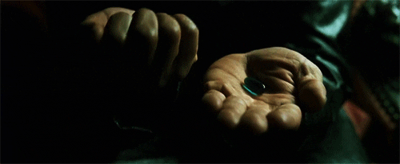

Le nombre de cartes à poser pour atteindre « La Chyster » varie selon le nombre de joueurs :
La Chyster c’est quand tu as posé devant toi le nombre de carte défini, plus haut.
A ce moment précis, tu vas donner le nombre de gorgées équivalentes au nombre de cartes devant toi à UNE SEULE PERSONNE et par la même occasion DÉTRUIRE son jeu (cartes + jokers) ce qui le fera repartir de zéro mais avec un taux d’alcoolémie plus important ! #hic
Lors du premier tour ou si tu n’as aucune carte devant toi :
Si la couleur est correcte, tu poses la carte devant toi, sinon tu bois 1 gorgée.
Si tu as déjà une carte devant toi :
Lorsque c’est ton tour de jouer, tu peux, soit tenter de deviner la couleur de la carte, soit donner les gorgées correspondantes à tes cartes à une personne. #pillulerouge #pillulebleue

Si la couleur est correcte, tu poses la carte devant toi.
Sinon, si le numéro de la carte tirée est au-dessus de la dernière que tu as posée devant toi, tu peux retenter. (Pour rappel l’ordre, en partant du plus grand, est : 10, 9, 8, 7, 6, 5, 4, 3, 2).
En cas d’égalité, la maison ne fait pas crédit, tu perds et tu noies ton chagrin dans ton verre.
Tu as 3 essais pour trouver la bonne couleur sinon tu bois le nombre de gorgées équivalentes au nombre de cartes devant toi. #lifesucks
Valet :
tu désignes 2 personnes qui font un shifu-bois (pierre feuille ciseaux pour une gorgée).
Dame :
le dernier qui dit «pute» boit (le mot peut être modifié au début de jeu si tu joues avec des enfants).
Roi :
c’est un joker, tu le poses à l’extérieur de ton jeu. Il te permet d’éliminer la dernière carte de ton jeu, au début de ton tour ou, au moment où tu devrais perdre. Attention, le roi se place au-dessus de ton jeu et ne te rajoute pas une carte dans ta suite pour la Chyster.
As :
soit tu la poses dans ton jeu et c’est un 1 (soit la plus petite carte), soit tu la poses chez quelqu’un à la place de sa dernière carte et c’est la plus grande carte (en gros pour le fumer s’il se rate au rouge ou noir). #pasdeplacepourlesfaibles
A l’exception du Roi et de l’As qui te font poser une carte qu’importe la couleur, il te faudra rejouer si tu tombes sur un valet ou une dame car tu ne poses pas de cartes devant toi. #nopain #nogain